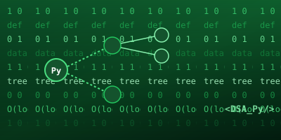

Credentials
Certifications & Credentials
Verified course completions and placeholder slots ready for upcoming industry certifications.

Python & DSAPython Data Structures & Problem Solving
 Database
Database
Database Management Systems (DBMS)
Upcoming Credential Slot